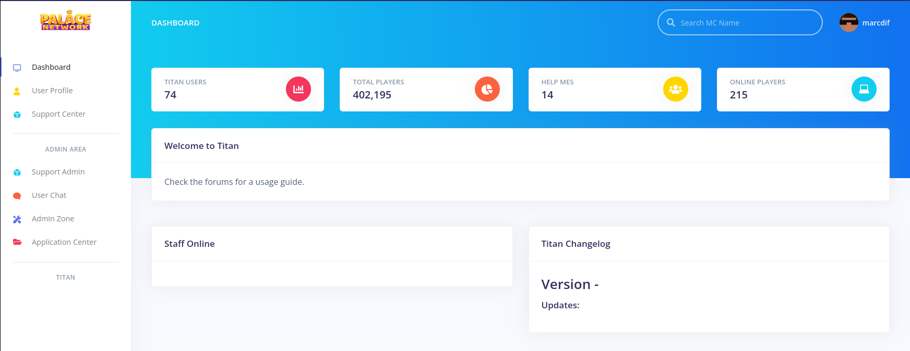
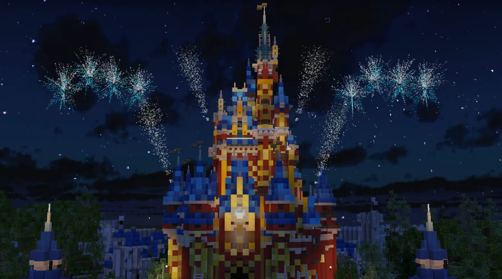
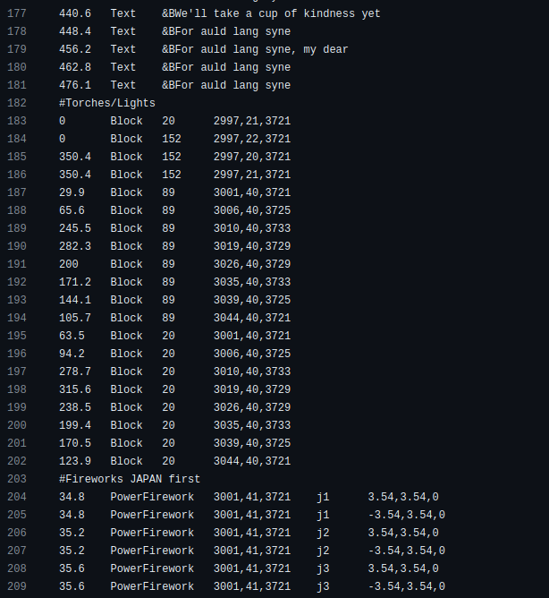

Throughout high school and college, I was a member of an online Minecraft community (MCMagic/Palace Network). After joining in 2013, I joined the volunteer management team and began writing custom Java plugins for the community's Minecraft server.
From when I joined the management team to when I departed in 2021, I contributed to over 50 different software projects for the server. These ranged from simple cosmetic effects to complex cross-server communication and load balancing. Below is an explanation of the most significant projects I led the development of. Where possible, the source code from these projects has been made publicly available on the PalaceInteractiveArchive GitHub page.
React Admin Panel and TypeScript API - Titan and InternalAPI (Click to Expand)
Titan was an admin panel that staff members could use to aid them with their tasks. There were a number of built-in features such as Player Lookup, Chat History, Moderation Logs, and more. It was also used as a central place to communicate updates to our team of over 100 volunteer staff members.

Powering Titan was the Internal API - a TypeScript application using the Express framework that served as the central API for the Minecraft network. All of Titan's requests for user data, chat history, moderation logs, player statistics, admin authentication, and more were handled by this API.
The code is currently not maintained, so it is likely using software libraries that currently have security issues. However, at the time we took great care to ensure the software was secure, that all of the API endpoints handled data properly, and it didn't respond with more data than required - for both successful and errored responses.
This was critical since this API was available on the public internet. The Minecraft network didn't have the resources to require staff members to access Titan through a VPN, which meant both applications would be susceptible to attacks. We used Cloudflare as a Web Application Firewall and a layer of defense from DDoS attacks. Beyond that, we ensured all endpoints required authentication, that passwords were hashed with secure cryptographic algorithms, and that user sessions expired after a reasonable amount of time.
Other consumers of the Internal API include our Discord server and the Minecraft servers. The API replaced a legacy Discord bot and facilitated user validation. Users needed to link their Minecraft account with their Discord account before they could chat in our Discord server. This reduced the amount of spam the server received. The Minecraft servers also used the API to log player chat messages in a MongoDB database. The network had anywhere from 10-20 servers running different software on them, so having the API be the central application logging chat messages to MongoDB allowed us to standardize the document format and easily make changes if necessary.
The full source code for the Titan and Internal-API projects are available on GitHub.
Minecraft Show System (Click to Expand)
The most popular area of the Minecraft server was the interactive recreation of Walt Disney World that we had built. Later on this expaned to include Disneyland and Universal Orlando. All of these theme parks had functioning rides, sound effects, and audio tracks. One of the most fascinating aspects of the theme parks, however, were the recreations of the firework shows from the real parks.

In the early days of the server, we only had one show - Wishes - which was manually run by staff members who would fly around invisible and launch fireworks at random intervals. In 2013, the server got its first show plugin which allowed us to code shows in specially formatted text files that contained the instructions for the show. The plugin was simple, but the ability to repeat tasks at consistent times was groundbreaking for us!
Later on, I recreated that plugin and expanded on its capabilities. Rather than being limited to simple actions like sending chat messages, launching fireworks and placing blocks, the plugin could also create fountains of colored water, animatronics that moved on set paths, paste in "schematics" or prebuilt sets into the world, and launch a wider variety of fireworks. This allowed the show team to expand beyond just the Wishes firework show to stage shows as well. The Show plugin was even used to animate sequences in rides to make those more immersive as well.
As I mentioned earlier, the instructions for the shows were written in specially formatted text files. This was done by a talented team of Show Techs, not myself. However, I worked with them to add new features to the system and ensure the format of the show files worked for them. Some show files were over one million lines long due to complex scene changes requiring many Block instructions (changing a Block in the game from one type to another, like changing colors). You can see a snippet from this show file below.

The full source code for the Show project, as well as the Show files, are available on GitHub.
Central Network Management Service - Dashboard (Click to Expand)
Dashboard was a standalone Java application and websocket server that acted as the center of the network for several years. Minecraft is not designed out of the box to scale to support hundreds of connected players. To account for this, various projects have stepped in to solve that problem with smart TCP proxies that connect multiple Minecraft servers together (see BungeeCord and Waterfall). These proxies allow players to maintain a long-running TCP connection with one central service (the proxy) while the user can switch between multiple downstream services (the Minecraft servers).
To improve the user experience further, plugins can be added to these proxies to allow players on different servers to chat with each other, send direct messages, etc. However, we ran into capacity and reliability issues by only running one BungeeCord proxy. We wanted to run multiple proxies, but doing so would split the userbase further. The proxies wouldn't communicate with each other, so players on different proxies couldn't chat together, message each other, etc.
Dashboard was my proposed solution to this problem. We would have multiple BungeeCord proxies, each responsible for connecting players to the same list of 15 or so Minecraft servers. However, the proxies would forward all chat and command packets from the player to Dashboard, which would manage the cross-server communication features the network relied on.
The initial implementation of Dashboard was very successful, allowing us to have as many proxies as necessary, and as many Minecraft servers as the team wanted. Dashboard's features were then expanded to include social systems (friends lists and party chats), enable queueing for events across different Minecraft servers, integrations with external tools the moderation teams used like Slack, and much more.
The full source code for the Dashboard project is available on GitHub.
RabbitMQ Network Redesign - PalaceBungee and ParkManager (Click to Expand)
While Dashboard was key in enabling the network to scale in terms of player capacity, feature growth, and network reliability, one issue was that it was a single-point-of-failure. Because Dashboard was so central to many operations on the network, when it was offline players couldn't connect to the network, chat messages couldn't be sent, and all of the other Dashboard-specific features were unavailable.
To address those issues, I led the design and development of an updated network structure in which the Minecraft servers, BungeeCord proxies, and external services all communicate with each other through RabbitMQ message queues. This removed the single-point-of-failure issue that Dashboard introduced and allowed all these services to operate without a central system.
This was challenging to implement since Dashboard didn't just process simple transactions like chat messages. There were complex stateful systems like the party system, the queueing system and cross-server player inventories. Previously, the state for these systems was just managed through ArrayLists in Dashboard, with long-term data persisted to MongoDB.
With the decentralized design, the state for systems like these was migrated to multiple different sources. Data that was globally relevant, like all the active parties on the network, was moved to a MongoDB collection. All '/party' commands were moved to the BungeeCord proxy plugin "PalaceBungee"; the proxies communicated with each other through RabbitMQ and stored state in MongoDB.
The queue system, which enabled players from anywhere on the network to "get in line" for an event on a specific server, was split between PalaceBungee and ParkManager. Similar to parties, the state was stored in MongoDB, and both ParkManager and PalaceBungee interacted with that state.
Cross-server inventory management, which allowed players to have the same inventory across multiple Minecraft servers, was fully migrated to the ParkManager plugin (which ran on those servers which shared inventories). The servers communicated directly with each other through RabbitMQ and used MongoDB for storing inventory data.